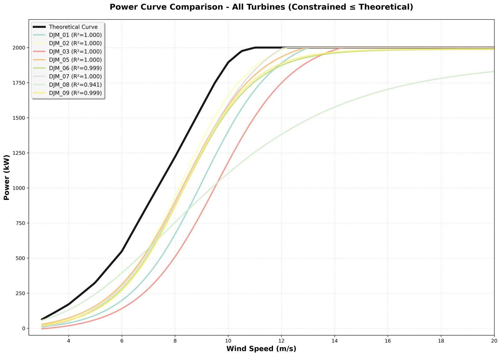

SCADA data from wind farms is full of noise: curtailment, sensor faults and downtime. In raw power curves you can't tell which turbines are under-performing.
What I built
A power-curve service: sigma-based outlier filtering, physics-constrained logistic fits (curve_fit with a Differential Evolution fallback) and a parallel pipeline, plus LightGBM anomaly models and FastAPI KPIs.
The result
R² 0.999 on 7 of 8 turbines · ~3 s per turbine · 1.98× faster in parallel · 15+ turbines in production.

Raw → clean power curve
cleanoutlierstheoreticalfittedR² —
01
Hybrid optimiser
curve_fit, with a Differential Evolution fallback
02
Physics as constraints
Capped at 2,000 kW rated power, never above theoretical